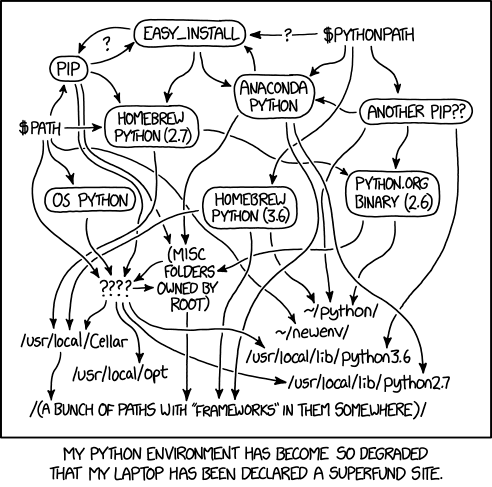
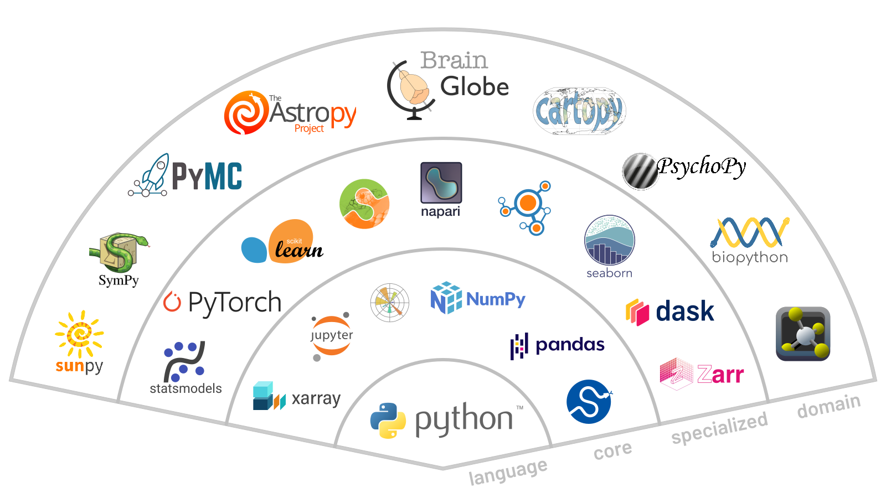
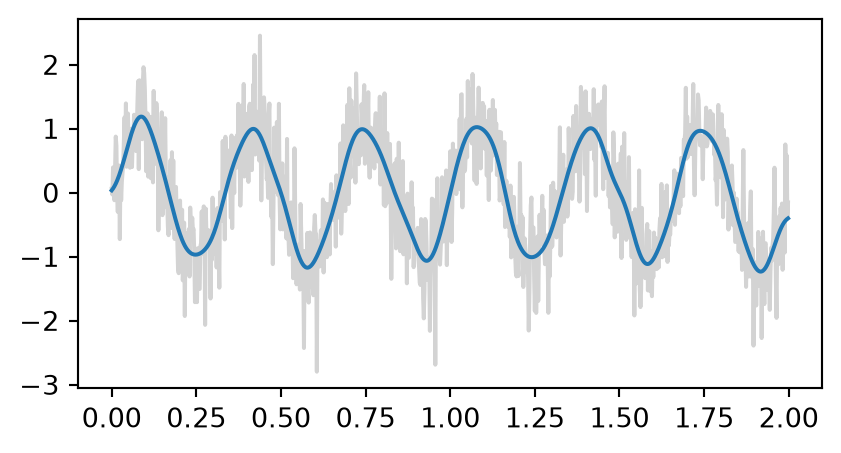
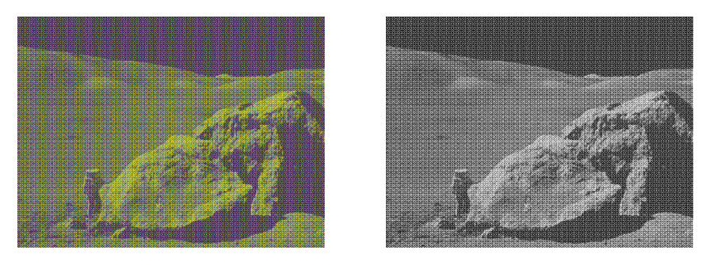

Introduction to Scientific Python
2026-10-05
The two days
| Day | Topics | Slides |
|---|---|---|
| 1 | Setup and help - packages and environments - NumPy - SciPy | Day 1 |
| 2 | pandas - Matplotlib - scikit-learn - where to go next | Day 2 |
Each day has a break halfway through. Every block starts with a few slides, then exercises.
Setup
- Install Miniforge, which gives you
condawith conda-forge as the default channel. - Install uv.
- Get the course materials with either:
git clone https://github.com/neuroinformatics-unit/course-intro-scientific-python.git- Or download the ZIP file https://github.com/neuroinformatics-unit/course-intro-scientific-python/archive/main.zip
- In a terminal, from the extracted or cloned course folder:
Every line should say OK.
How the exercises work
In the repository
notebooks/: the exercisessolutions/: worked solutionsdata/: every dataset we use, so nothing downloads during class
In class
- Attempt each exercise before looking anything up
- Work with your neighbour
- Put up your hand (or a red sticky note) when stuck
Where the material comes from
- International Brain Laboratory, Brain Wide Map (International Brain Laboratory et al. 2026): the Neuropixels recording every exercise is built on
- Scientific Python Lectures (Varoquaux et al. 2024): the NumPy, SciPy and Matplotlib exercises, adapted to the recording
- Software Carpentry gapminder lesson (Software Carpentry 2024): the pandas exercises, adapted to the recording, and the gapminder data on the slides
- Python Data Science Handbook (VanderPlas 2016): background reading for NumPy, pandas and plotting
Material from these sources is adapted under their licences. See each notebook’s header for details.
Day 1: Environments, NumPy and SciPy
While we get started: run jupyter lab, open notebooks/day1_01_getting_help.ipynb and run the first cell, the setup check.
Course map
| Day | Before the break | After the break |
|---|---|---|
| 1 | Setup and help - packages and environments - NumPy | SciPy |
| 2 | pandas - Matplotlib | scikit-learn - where to go next |
- Today: arrays, and what you compute with them
- Tomorrow: tables, figures of them, and a first model
How the exercises work
- Notebooks live in
notebooks/, numbered by day and block - Cells that say
# Your code hereor Your answer here are for you - Try first, then the docs or a search engine, then an LLM (chat only) if you are stuck
- Stretch exercises are for anyone who finishes early
- Skipping them is fine
Reading a traceback
- Helps you find the source of the error
- Read from the bottom up: error type, then message, then the line that raised it
- Look for the last line that is your code
--------------------------------------------------------------------------- TypeError Traceback (most recent call last) Cell In[1], line 4 1 import numpy as np 2 3 n_points = 100 / 8 ----> 4 x = np.linspace(0, 1, n_points) File ~/work/course-intro-scientific-python/course-intro-scientific-python/.venv/lib/python3.13/site-packages/numpy/_core/function_base.py:123, in linspace(start, stop, num, endpoint, retstep, dtype, axis, device) 27 @array_function_dispatch(_linspace_dispatcher) 28 def linspace(start, stop, num=50, endpoint=True, retstep=False, dtype=None, 29 axis=0, *, device=None): 30 """ 31 Return evenly spaced numbers over a specified interval. 32 (...) 121 122 """ --> 123 num = operator.index(num) 124 if num < 0: 125 raise ValueError( 126 f"Number of samples, {num}, must be non-negative." 127 ) TypeError: 'float' object cannot be interpreted as an integer
Tracebacks through functions
--------------------------------------------------------------------------- ZeroDivisionError Traceback (most recent call last) Cell In[2], line 7 3 4 def call_func(x): 5 y = divide_0(x) 6 ----> 7 z = call_func(10) Cell In[2], line 5, in call_func(x) 4 def call_func(x): ----> 5 y = divide_0(x) Cell In[2], line 2, in divide_0(x) 1 def divide_0(x): ----> 2 return x / 0 ZeroDivisionError: division by zero
- Each block is one function call: the bottom one is where it broke
- Work upwards to find how you got there
Julia Evans, Debugging manifesto.
Getting help
- numpy.org/doc
- Or search for “numpy linspace”
- Examples at the bottom of each page are often the fastest way in
- LLMs can help, but verify the answer with the docs or a search engine
See also SPL, Getting help and finding documentation.
Live coding: getting help
- Start Jupyter Lab and open a notebook
- Look up
np.linspacewithhelp(),?and the online docs - Trigger an error on purpose and read the traceback
- Tab completion:
np.lin<Tab>
Your turn
Open notebooks/day1_01_getting_help.ipynb
- If you haven’t yet: run the setup check, every line should say
OK - Look up
np.arangethree ways and answer the questions - Read a traceback through two functions and fix the call
Stretch: section 4, tab completion and searching
Packages and environments
What is a package?
- Collection of modules (Python files) that provide specific functionality
- Can be installed from the Python Package Index (PyPI) or conda-forge
- Dependencies are solved automatically by package managers (pip, conda, uv)
- One of the best and worst things about Python
- Best: huge ecosystem of packages for almost anything
- Worst: packages go out of date, are abandoned, or conflict with each other
Package managers
pipinstalls packages from PyPI, the official Python package indexcondainstalls packages from conda or conda-forge, a community-maintained channeluvinstalls packages from PyPI and manages whole projects (uv pipis a drop-in forpip)
What is an environment?
- An environment is a collection of packages and an interpreter
- Isolated from other environments
- Allows multiple versions of the same package to coexist
- Can be exported and shared or recreated
Why bother?
- Dependency conflicts
- Project A needs
numpy<2, project B needsnumpy>=2.3 - One shared Python means one of them breaks
- Upgrading for one project silently changes the other
- Project A needs
- Reproducibility
- Six months later you need the same versions
- A colleague needs to rebuild your setup from a file
Without environments

xkcd 1987, CC BY-NC 2.5.
Working with environments
- Project-based: environments are tightly coupled to a project
- Typically stored in the project folder (
./.venv) - Managed with
venv+pip, oruv
- Typically stored in the project folder (
- Global or task-based: environments exist globally, easy to share across projects
- Typically stored in a central location (
~/miniforge3/envs/) - Managed with
conda
- Typically stored in a central location (
conda and conda-forge
- conda installs packages and their non-Python dependencies
- C libraries, Qt, CUDA, …
- conda-forge is the community channel where almost everything scientific lives
- Install conda through Miniforge, which uses conda-forge by default
- The course environment
scientific-pythonis a conda environment
Creating an environment
Activating an environment
- Check which Python you are using:
which python(macOS/Linux) orwhere python(Windows)
Cheat sheet: managing packages
| conda | pip | uv | |
|---|---|---|---|
| Install | conda install numpy |
pip install numpy |
uv add numpy |
| Pin a version | conda install tqdm=4.70.1 |
pip install tqdm==4.70.1 |
uv add tqdm==4.70.1 |
| Update | conda update scipy |
pip install -U scipy |
uv lock --upgrade-package scipy, then uv sync |
| List | conda list |
pip list |
uv pip list |
| Remove | conda remove numpy |
pip uninstall numpy |
uv remove numpy |
- Version syntax:
=for conda,==for pip and uv - Install from the terminal, not from inside Python, and activate the environment first
conda env listshows every environment on your machine; the conda cheat sheet has the rest
Terminal tips
Windows: use the Miniforge Prompt. --help on any command; Tab completes names; Up/Down recall history; Ctrl+C cancels; q quits a long output.
Sharing an environment
- Commit the file to your repository with your code
Lockfiles
- An environment file says what you asked for:
numpy=2.5 - A lockfile records the exact version of every package, dependencies included
- Rebuilds the same environment, months later, on another machine
uvwrites one automatically:uv.lockcondaneeds an extra tool (conda-lock)
Your turn
Open notebooks/day1_02_environments.ipynb. The work happens in a terminal.
- conda: create a scratch environment with pandas, export it, rebuild it under a new name, remove both
- uv: init a project, add requests, run a script, delete
.venv, rebuild it from the lockfile
Warning
Leave the course environment scientific-python alone: only work on the throwaway ones.
NumPy
The scientific Python ecosystem

After SPL, Python scientific computing ecosystem.
What is an array?
- A grid of values, all of the same type
- Stored in one block of memory
- Fast: operations run in compiled code, not Python
- Has a shape: how many values along each axis
- 1-D: a time series, 2-D: an image or a table, 3-D: a volume
Lists versus arrays
Creating arrays
array([0, 1, 2, 3, 4, 5])Shape, dimensions and dtype
array([[ 0, 1, 2, 3],
[ 4, 5, 6, 7],
[ 8, 9, 10, 11]])reshapegives the same values a new shape
dtypes
- Every element has the same dtype:
int64,float64,uint8,bool, … - NumPy picks one for you, or you choose with
dtype= - Convert with
.astype()
Indexing and slicing
start:stop:step, stop excluded, counting from 0- Negative indices count from the end
- In 2-D:
a[row, column], and:means “all”
Views and copies
array([[99, 1, 2, 3],
[ 4, 5, 6, 7],
[ 8, 9, 10, 11]])blooks at the same memory asa
- Check with
np.shares_memory(a, b)
In place, or a new array?
- Most NumPy functions return a new array; assignment into
a[...]and+=change it in place
The example data
- A mouse turns a wheel to move a striped patch on a screen to the centre; a correct turn earns a drop of water
- The patch appears left or right, faint or strong: its contrast
- A Neuropixels probe records from 384 sites along 3.8 mm of brain
The example data
| Array | Shape | Axes |
|---|---|---|
lfp |
(5000, 384) | time (500 Hz, 10 s), channel |
spike_counts |
(51, 533, 30) | unit, trial, 50 ms bin |
contrast, choice, rt, … |
(533,) | trial |
area, depth_um |
(384,) | channel |
- Channel 0 is the deepest site
International Brain Laboratory, Brain Wide Map, via DANDI (International Brain Laboratory et al. 2026).
Your turn
Open notebooks/day1_03_numpy.ipynb, Part 1: indexing
- The recording from the previous slide, loaded for you in the first cells
- Fetch time windows from chosen channels, and trials from 3-D spike counts
Stretch (section 5): views and copies, a function that changes its input by accident, int16 pitfalls
Universal functions (ufuncs)
- Act element by element, in compiled code
- Arithmetic:
+,-,*,/,** - Maths:
np.sqrt,np.exp,np.log,np.sin,np.abs, … - Comparisons:
<,==, … giveboolarrays
Aggregations and axis
- Also
mean,std,min,max,argmin,argmax,any,all,cumsum np.nanmeanand friends ignore missing values (NaN)
Live coding: aggregations along an axis
- A small “students × tests” table of scores
- Mean per student, best score per test
argmax: which student was bestkeepdims=Trueto keep the shape
Broadcasting
Arrays of different shapes combine by stretching axes of size 1.
Rules, comparing shapes from the right:
- Pad the shorter shape with 1s on the left
- Two sizes match if they are equal, or one of them is 1
- Size-1 axes are stretched to fit
(3, 1)with(4,)→(3, 4)✓(3, 2)with(3,)→ ✗ error
Broadcasting in practice
array([[ 0, 1, 2, 3],
[10, 11, 12, 13],
[20, 21, 22, 23]])np.newaxis(orNone) adds an axis of size 1
Your turn
Open notebooks/day1_03_numpy.ipynb, Part 2: aggregations and broadcasting
- Summarise spike counts (unit × trial × bin) along one axis, or several
- Re-referencing and baseline correction by broadcasting
- Fix a broadcasting error
Stretch: distances between recording sites
Boolean masks
- A comparison gives a
boolarray: a mask
array([False, True, False, False, True])- Combine with
&,|,~(notand/or), with brackets around each comparison
Live coding: masks
- Select values by condition and count them
- Combine conditions
- Replace values in place, or into a new array with
np.where - Masks along an axis with
anyandall
Fancy indexing
- Index with arrays of integers to pick any elements, in any order
- Always returns a copy; assigning through it changes the original
Vectorise instead of looping
- Runs in Python, one element at a time
%timeit: about 70 ms for a million values
- Measure before optimising:
%timeitfor one line,%%timeitfor a whole cell in Jupyter or IPython
PDSH, Profiling and Timing Code. Timings measured on an Apple-silicon laptop; yours will differ.
The psychometric curve

- At each contrast: the fraction of trials on which the mouse chose right
- Contrast 0: nothing to see, so the mouse has to guess
- Blocks: 90 unbiased trials (
probability_left0.5), then the stimulus is on the left 80% of the time (0.8), then on the right 80% (0.2), … - If the block affects its choices, the curve shifts between blocks
- Part 3: compute the curve, block by block, without a loop
Your turn
Open notebooks/day1_03_numpy.ipynb, Part 3: masks and vectorising
- Response times: select trials by condition, and replace outliers with
NaN - Select channels by brain area with masks
- Time a loop against NumPy on the LFP
- The mouse’s psychometric curve, block by block, without a loop
Stretch: fancy indexing, data statistics (after SPL Ex. 23)
Checking your work with a plot

- A column of numbers is hard to judge; a plot is easy
fig, ax = plt.subplots(): a figure with one set of axesax.plot(x, y)draws a line;"o-"adds markers- Labels and a legend, and that’s all for today
- Tomorrow: Matplotlib properly
Your turn
Open notebooks/day1_03_numpy.ipynb, Part 4: check your work with a plot
- Plot the psychometric curve in each kind of block
- Does the picture agree with what you concluded from the numbers?
- Didn’t finish part 3? Copy the part 3c cells from solutions/day1_03_numpy.ipynb
Break
SciPy
What lives where
| Submodule | For |
|---|---|
scipy.signal |
Filtering, spectra, peak finding |
scipy.fft |
Fourier transforms |
scipy.stats |
Distributions, statistical tests |
scipy.optimize |
Fitting (curve_fit), minimising, root finding |
scipy.ndimage |
N-D image filters, morphology, measurements |
import scipy as sp, thensp.signal.butter,sp.stats.ttest_ind, …- Also
interpolate,integrate,linalg,sparse,spatial - Check SciPy before writing an algorithm yourself
Fourier transforms
- Any signal is a sum of waves of different frequencies
- The spectrum shows how much of each frequency there is
- Periodic noise shows up as isolated peaks
- Remove them, then transform back
sp.ffthas the forward and inverse transforms, in 1-D, 2-D and N-D
Your turn
Open notebooks/day1_04_scipy.ipynb, Part 1: filtering with the FFT (after SPL Ex. 42)
- The same idea on real data: find the 60 Hz mains hum (US recording) and its harmonics in the LFP’s spectrum, and remove them
Filtering with scipy.signal
import scipy as sp
fs = 500
t = np.arange(0, 2, 1 / fs)
rng = np.random.default_rng(0)
noisy = np.sin(2 * np.pi * 3 * t) + rng.normal(0, 0.5, t.size)
sos = sp.signal.butter(4, 10, btype="lowpass",
fs=fs, output="sos")
smooth = sp.signal.sosfiltfilt(sos, noisy)
fig, ax = plt.subplots(figsize=(5, 2.5))
ax.plot(t, noisy, color="lightgrey")
ax.plot(t, smooth);
- Design a filter:
butter,iirnotch, … (cut-offs in Hz withfs=) - Apply it:
sosfiltfilt(orfiltfiltforb, a) filtfiltruns forwards then backwards: no delayaxis=filters every channel at once
Your turn
Open notebooks/day1_04_scipy.ipynb, Part 2: filtering with scipy.signal
- A 60 Hz notch filter: what did the FFT version remove that the notch didn’t?
- A 1-30 Hz band-pass filter on one channel, then on all 384, with no loop
- Didn’t finish part 1? Copy its cells from solutions/day1_04_scipy.ipynb: part 2 compares with
cleaned
Stretch: a smoother spectrum with welch, which distribution fits the response times (Ex. 41), 2-D minimisation (Ex. 40)
Exercises adapted from Scientific Python Lectures (Varoquaux et al. 2024).
Wrap-up
- Environments: one per project, described by a committed file
environment.yml, orpyproject.toml+uv.lock
- Arrays: one dtype, a shape, and views versus copies
- Vectorise, don’t loop: ufuncs, aggregations along axes, broadcasting, masks
- SciPy: check it before writing an algorithm; filters take an
axis - Tomorrow: tables with pandas, figures with Matplotlib, then a first model with scikit-learn
Exercises adapted from Scientific Python Lectures (Varoquaux et al. 2024) (CC BY 4.0). Further reading in the Python Data Science Handbook (VanderPlas 2016).
Day 2: pandas, plotting and scikit-learn
Today
| Before the break | After the break |
|---|---|
| pandas | scikit-learn |
| Matplotlib | Where to go next - wrap-up |
- Yesterday: arrays, and filtering them with SciPy
- Today: tables of the same recording, figures of them, then a first model
Yesterday in one slide
- Arrays: one dtype, a shape; index, slice and mask them
- Vectorise: aggregations along an
axis, broadcasting, no Python loops - SciPy:
sp.fftandsp.signalfiltered the mains hum out of the LFP - Psychometric curve: masks and broadcasting; today it takes one
groupbyline
pandas
What is pandas?
- Tables of data, built on NumPy
- DataFrame: a table of named columns sharing one row index
- Each column has its own dtype (numbers are NumPy arrays)
- Series: one column on its own, with the index
- Reads and writes CSV, Excel, Parquet, SQL, …
Reading a CSV file
| gdpPercap_1952 | gdpPercap_1957 | gdpPercap_1962 | gdpPercap_1967 | gdpPercap_1972 | gdpPercap_1977 | gdpPercap_1982 | gdpPercap_1987 | gdpPercap_1992 | gdpPercap_1997 | gdpPercap_2002 | gdpPercap_2007 | |
|---|---|---|---|---|---|---|---|---|---|---|---|---|
| country | ||||||||||||
| Albania | 1601.056136 | 1942.284244 | 2312.888958 | 2760.196931 | 3313.422188 | 3533.003910 | 3630.880722 | 3738.932735 | 2497.437901 | 3193.054604 | 4604.211737 | 5937.029526 |
| Austria | 6137.076492 | 8842.598030 | 10750.721110 | 12834.602400 | 16661.625600 | 19749.422300 | 21597.083620 | 23687.826070 | 27042.018680 | 29095.920660 | 32417.607690 | 36126.492700 |
| Belgium | 8343.105127 | 9714.960623 | 10991.206760 | 13149.041190 | 16672.143560 | 19117.974480 | 20979.845890 | 22525.563080 | 25575.570690 | 27561.196630 | 30485.883750 | 33692.605080 |
| Bosnia and Herzegovina | 973.533195 | 1353.989176 | 1709.683679 | 2172.352423 | 2860.169750 | 3528.481305 | 4126.613157 | 4314.114757 | 2546.781445 | 4766.355904 | 6018.975239 | 7446.298803 |
| Bulgaria | 2444.286648 | 3008.670727 | 4254.337839 | 5577.002800 | 6597.494398 | 7612.240438 | 8224.191647 | 8239.854824 | 6302.623438 | 5970.388760 | 7696.777725 | 10680.792820 |
index_col: the column that becomes the row labelspd.read_excel,data.to_csv(...)for other formats and for writing
Inspecting a DataFrame
data.head(): the first few rowsdata.info(): columns, dtypes, missing valuesdata.describe(): summary statistics per columndata.shape,data.columns,data.indexdata.T: rows and columns swapped
Live coding: gapminder
- Read the European GDP table
- Inspect it:
head,info,describe - Look at the index and the columns
- Get one column as a Series
Selecting with iloc and loc
| gdpPercap_1952 | gdpPercap_1957 | |
|---|---|---|
| country | ||
| Albania | 1601.0 | 1942.0 |
| Austria | 6137.0 | 8843.0 |
- End excluded, as in NumPy
data["gdpPercap_2007"]is the shortcut for one column:means “all rows” or “all columns”
Your turn
Open notebooks/day2_01_pandas.ipynb. The exercises follow the Software Carpentry gapminder lesson (Software Carpentry 2024), on the recording’s trials and units tables.
- Reading tabular data: read tables from the HDF5 file, inspect them, write and read back a CSV
- Selecting data: individual values, slices,
idxmin/idxmax, selection practice
Boolean masks
- The same idea as NumPy masks, but rows keep their labels
| gdpPercap_1952 | gdpPercap_2007 | |
|---|---|---|
| country | ||
| Ireland | 5210.0 | 40676.0 |
| Norway | 10095.0 | 49357.0 |
- Combine conditions with
&,|and~, with brackets around each comparison rich.sum()counts the matching rows;data[rich]keeps them
Group by: split, apply, combine
- Split rows into groups by the values in one column
- Apply a function to each group:
mean,count,idxmax, … - Combine the results into a table indexed by group
continent
Africa 54.8
Americas 73.6
Asia 70.7
Europe 77.6
Oceania 80.7
Name: lifeExp_2007, dtype: float64Beyond today: merging tables is stretch material in the notebook; PDSH chapter 3 also covers missing data.
Live coding: masks and group by
- Select countries by a condition on one column
- Add a new column computed from others
- Group by continent and summarise
- Several summaries at once with
.agg
Your turn
Open notebooks/day2_01_pandas.ipynb
- Boolean masks: the end of section 2, on the units, combining text and number conditions
- Group by: yesterday’s psychometric curve in one line, checked against your NumPy version
Stretch: one grouping question of your own
Tidy (“long”) data
| continent | country | gdpPercap_1952 | gdpPercap_1957 | gdpPercap_1962 | |
|---|---|---|---|---|---|
| 0 | Africa | Algeria | 2449.0 | 3014.0 | 2551.0 |
| 1 | Africa | Angola | 3521.0 | 3828.0 | 4269.0 |
| 2 | Africa | Benin | 1063.0 | 960.0 | 949.0 |
- One column per measurement and year
Your turn
Open notebooks/day2_01_pandas.ipynb, Part 4: tidy data
- Melt the psychometric curve, one column per block, into a long table
- Melt the firing rates, one column per time bin, into one row per unit and bin
Stretch: Many Ways of Access; merging units with electrodes (PDSH)
Matplotlib
Figures, axes and artists

- Figure: the whole canvas, saved to a file
- Axes: one plot area; a figure can hold many
- Artists: everything drawn (lines, text, ticks), each with properties you can change
pyplot versus fig, ax
- You used
fig, axyesterday; we use it throughout: it scales to many panels and works inside functions - Most
plt.xlabel(...)calls becomeax.set_xlabel(...) - Code from an LLM or the web often mixes the two: settle on one before you change it
Matplotlib docs, the two interfaces.
Saving figures
- The extension picks the format
bbox_inches="tight"trims the white border
Live coding: a first figure
- Plot a damped oscillation with the defaults
- Improve it: size, colours, labels, legend; save it as PNG and PDF
- The same plot in
pyplotstyle, then translate it back tofig, ax
Your turn
Open notebooks/day2_02_matplotlib.ipynb, Part 1: simple plot
- Build a figure of two LFP traces step by step, from the recording (International Brain Laboratory et al. 2026)
- Colours and a legend, ticks at the stimuli, then save it
Optional: limits, spines and an annotation
More plot types
| Method | For |
|---|---|
ax.scatter(x, y, s=..., c=...) |
Points, with size and colour per point |
ax.hist(values, bins=...) |
Distributions |
ax.bar(names, heights) |
Values per category |
ax.errorbar(x, y, yerr=...) |
Means with error bars |
ax.imshow(array) |
Images and 2-D arrays |
- Several panels:
fig, axes = plt.subplots(1, 3), thenaxes[0].plot(...)
Images and colormaps

- A 2-D grey image has no colour:
imshowmaps values through a colormap - Perceptually uniform maps (
viridis,gray); diverging maps (RdBu_r) only for data centred on zero fig.colorbar(im, ax=ax)shows the mapping
Your turn
Open notebooks/day2_02_matplotlib.ipynb, Part 2: the whole recording as an image (after SPL Ex. 31)
- A first attempt shows the LFP badly: fix its aspect, origin, axis units and colormap
Stretch: a scatter of the units along the probe, spike counts as an image, the population response, subplot_mosaic layouts, the LFP’s envelope, more plot types
Break
scikit-learn
What is scikit-learn?
- Machine learning in Python, built on NumPy and SciPy
- Supervised: learn to predict
yfromX(classification, regression) - Unsupervised: find structure in
Xalone (clustering, dimensionality reduction) - Every model has the same interface: learn it once
X and y
X: a table, one row per sample, one column per feature- A DataFrame or a 2-D NumPy array
- Here: one row per trial;
trials[["contrast", "probability_left"]]
y: a 1-D array, one answer per sample- Here: did the mouse choose right?
Xmust be 2-D even with one feature:trials[["contrast"]], nottrials["contrast"]
The estimator pattern
array([False, True])- Make the model, with its settings
fit(X, y)learns from the datapredict(X)for new samplespredict_proba(X): one column per class, in the order ofmodel.classes_- Learned values end in
_:model.coef_
Train and test
- A model scored on the data it learned from looks better than it is
- Hold some samples back: fit on the training set, score on the test set
- Compare with a baseline, such as always guessing the most common answer
- Cross-validation repeats the split several ways:
cross_val_score
Live coding: hours of study
- The pass/fail data from the slide: split, fit, score
- Compare with the baseline
coef_, thenpredict_probaon a grid, plotted over the data
Your turn
Open notebooks/day2_04_sklearn.ipynb
- Fit a model: predict the mouse’s choice from contrast and block; score it on held-out trials against a baseline
- Look inside: what do the coefficients mean? Plot the model’s curves over the psychometric curve from the pandas block
Stretch: a better feature, whether the block helps (cross-validation), decoding the choice from the neurons
Where to go next
scikit-image: images are arrays
import skimage as ski
image = ski.io.imread("nuclei.tif") # a NumPy array
smooth = ski.filters.gaussian(image, sigma=2)
mask = smooth > ski.filters.threshold_otsu(smooth) # a boolean mask
labels = ski.measure.label(mask) # 0 = background, 1..N = objects
table = ski.measure.regionprops_table(labels, properties=["area", "eccentricity"])- Use it when: you filter, threshold, segment or measure microscopy (or any) images
- Measurements come out as a table, ready for pandas
xarray: labelled N-D arrays
import xarray as xr
# lfp_uv: (n_samples, n_channels); time: seconds; area: one label per channel
lfp = xr.DataArray(lfp_uv, dims=("time", "channel"),
coords={"time": time, "area": ("channel", area)})
lfp.sel(time=slice(2, 4)).mean(dim="time") # by label and by name, not position
lfp.groupby("area").mean()- Use it when: you want named dimensions, scales and attributes on N-D arrays
- Reads and writes NetCDF and Zarr; pandas-style
groupbyon N-D data
dask: bigger than memory, in parallel
- Use it when: your data do not fit in memory, or one core is too slow
- NumPy- and pandas-like interfaces; xarray uses it under the hood
napari: look at your data
- Use it when: you need to browse, check or annotate N-D images: z-stacks, time-lapses, many channels
- Opens a desktop window: install it on your own machine
Also worth knowing
| Package | What it is for |
|---|---|
| Zarr | Chunked, compressed N-D arrays on disk or in the cloud |
| Polars | Fast DataFrames with a lazy query engine |
| Numba | Compiles the Python loops you cannot avoid to machine code with @numba.njit |
Wrap-up
- Tables:
locversusiloc, masks,groupby, and tidy (long) data - Plot with
fig, ax = plt.subplots() - scikit-learn:
Xis samples × features;fit, then score on held-out data against a baseline - Check the ecosystem before writing an algorithm yourself: SciPy, scikit-image, xarray, dask, napari
Keep going: the Scientific Python Development Guide, the advanced chapters of Scientific Python Lectures (Varoquaux et al. 2024), and the BioImage Analysis Notebooks.
Exercises adapted from Scientific Python Lectures (Varoquaux et al. 2024) (CC BY 4.0) and the Software Carpentry gapminder lesson (Software Carpentry 2024) (CC BY 4.0). Further reading in the Python Data Science Handbook (VanderPlas 2016).